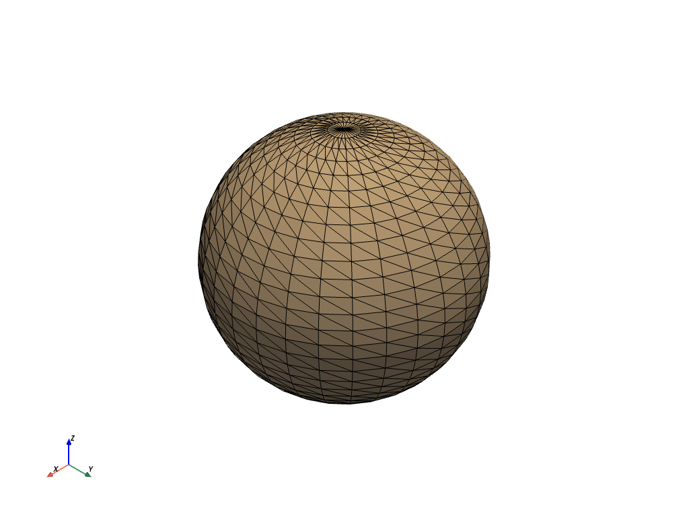

Datasets¶
Datasets are any spatially referenced information and usually consist of
geometrical representations of a surface or volume in 3D space.
In VTK, this superclass is represented by the vtk.vtkDataSet abstract class.
In VTK, datasets consist of geometry, topology, and attributes to which PyVista provides direct access:
Geometry is the collection of points and cells in 2D or 3D space.
Topology defines the structure of the dataset, or how the points are connected to each other to form a cells making a surface or volume.
Attributes are any data values that are associated to either the points or cells of the dataset
All of the following data types are listed subclasses of a dataset and share a
set of common functionality which we wrap into the base class
pyvista.DataSet.
The DataSet Model¶
The pyvista.DataSet class holds attributes that are common to all
spatially referenced datasets in PyVista.
This base class is analogous to VTK’s vtk.vtkDataSet class.
Attributes
Return the active scalars as an array. |
|
[field, name]. |
|
Return the active scalar’s name. |
|
Return the active tensors array. |
|
[field, name]. |
|
Return the name of the active tensor array. |
|
Return the active vectors array. |
|
[field, name]. |
|
Return the name of the active vectors array. |
|
Return a list of array names for the dataset. |
|
Return a glyph representation of the active vector data as arrows. |
|
Return the bounding box of this dataset. |
|
Return vtkCellData as DataSetAttributes. |
|
Return the center of the bounding box. |
|
Return the range of the bounding box. |
|
Return the length of the diagonal of the bounding box. |
|
Return the number of arrays present in the dataset. |
|
Return the number of cells in the entire dataset. |
|
Return the number of points in the entire dataset. |
|
Return the number of cells. |
|
Return the number of points. |
|
Return vtkPointData as DataSetAttributes. |
|
Return a pointer to the points as a numpy object. |
|
Return the active texture coordinates on the points. |
|
Return a dictionary to hold compatible |
|
Return active vectors. |
|
Return the mesh volume. |
Methods
Get a new representation of this object as an |
|
|
Return the bounding box of a cell. |
|
Return the number of points in a cell. |
|
Return the points in a cell. |
|
Return the type of a cell. |
Remove all arrays from point/cell/field data. |
|
Remove all cell arrays. |
|
Remove all point arrays. |
|
Clear the textures from this mesh. |
|
|
Copy pyvista meta data onto this object from another object. |
|
Find index of closest cell in this mesh to the given point. |
|
Find index of closest point in this mesh to the given point. |
|
Search both point, cell and field data for an array. |
|
Get the non-NaN min and max of a named array. |
|
Overwrite this mesh inplace with the new mesh’s geometries and data. |
|
Plot a vtk or numpy object. |
Make points double precision. |
|
|
Change array name by searching for the array then renaming it. |
|
Rotate mesh about the vector. |
|
Rotate mesh about the x-axis. |
|
Rotate mesh about the y-axis. |
|
Rotate mesh about the z-axis. |
|
Find the scalars by name and appropriately sets it as active. |
|
Find the tensors by name and appropriately sets it as active. |
|
Find the vectors by name and appropriately sets it as active. |
|
Translate the mesh. |
- class DataSet(*args, **kwargs)¶
Bases:
pyvista.core.filters.data_set.DataSetFilters,pyvista.core.dataobject.DataObjectMethods in common to spatially referenced objects.
- property active_scalars: Optional[pyvista.core.pyvista_ndarray.pyvista_ndarray]¶
Return the active scalars as an array.
- property active_scalars_info: pyvista.core.dataset.ActiveArrayInfo¶
[field, name].
- Type
Return the active scalar’s field and name
- property active_scalars_name: str¶
Return the active scalar’s name.
- property active_tensors: Optional[numpy.ndarray]¶
Return the active tensors array.
- property active_tensors_info: pyvista.core.dataset.ActiveArrayInfo¶
[field, name].
- Type
Return the active tensor’s field and name
- property active_tensors_name: str¶
Return the name of the active tensor array.
- property active_vectors: Optional[pyvista.core.pyvista_ndarray.pyvista_ndarray]¶
Return the active vectors array.
- property active_vectors_info: pyvista.core.dataset.ActiveArrayInfo¶
[field, name].
- Type
Return the active scalar’s field and name
- property active_vectors_name: str¶
Return the name of the active vectors array.
- property array_names: List[str]¶
Return a list of array names for the dataset.
This makes sure to put the active scalars’ name first in the list.
- property arrows: Optional[pyvista.core.pointset.PolyData]¶
Return a glyph representation of the active vector data as arrows.
Arrows will be located at the points of the mesh and their size will be dependent on the length of the vector. Their direction will be the “direction” of the vector
- Returns
arrows (pyvista.PolyData) – Active scalars represented as arrows.
- property bounds: List[float]¶
Return the bounding box of this dataset.
The form is: (xmin,xmax, ymin,ymax, zmin,zmax).
- cast_to_unstructured_grid() pyvista.core.pointset.UnstructuredGrid¶
Get a new representation of this object as an
pyvista.UnstructuredGrid.
- property cell_arrays: pyvista.core.datasetattributes.DataSetAttributes¶
Return vtkCellData as DataSetAttributes.
- cell_bounds(ind: int) List[float]¶
Return the bounding box of a cell.
- Parameters
ind (int) – Cell ID.
- Returns
list(float) – The limits of the cell in the X, Y and Z directions respectivelly.
Examples
>>> from pyvista import examples >>> mesh = examples.load_airplane() >>> mesh.cell_bounds(0) [896.9940185546875, 907.5390014648438, 48.760101318359375, 55.49020004272461, 80.74520111083984, 83.65809631347656]
- cell_n_points(ind: int) int¶
Return the number of points in a cell.
- Parameters
ind (int) – Cell ID.
- Returns
int – Number of points in the cell.
Examples
>>> from pyvista import examples >>> mesh = examples.load_airplane() >>> mesh.cell_n_points(0) 3
- cell_points(ind: int) numpy.ndarray¶
Return the points in a cell.
- Parameters
ind (int) – Cell ID.
- Returns
numpy.ndarray – An array of floats with shape (number of points, 3) containing the coordinates of the cell corners.
Examples
>>> from pyvista import examples >>> mesh = examples.load_airplane() >>> mesh.cell_points(0) [[896.99401855 48.76010132 82.26560211] [906.59301758 48.76010132 80.74520111] [907.53900146 55.49020004 83.65809631]]
- cell_type(ind: int) int¶
Return the type of a cell.
- Parameters
ind (int) – Cell ID.
- Returns
int – VTK cell type. See <https://vtk.org/doc/nightly/html/vtkCellType_8h_source.html>.
Examples
>>> from pyvista import examples >>> mesh = examples.load_airplane() >>> mesh.cell_type(0) 5
- property center: Union[List[float], Tuple[float, float, float], numpy.ndarray]¶
Return the center of the bounding box.
- clear_arrays()¶
Remove all arrays from point/cell/field data.
- clear_cell_arrays()¶
Remove all cell arrays.
- clear_point_arrays()¶
Remove all point arrays.
- clear_textures()¶
Clear the textures from this mesh.
- copy_meta_from(ido: pyvista.core.dataset.DataSet)¶
Copy pyvista meta data onto this object from another object.
- property extent: Optional[list]¶
Return the range of the bounding box.
- find_closest_cell(point: Union[int, numpy.ndarray]) Union[int, numpy.ndarray]¶
Find index of closest cell in this mesh to the given point.
- Parameters
point (iterable(float) or np.ndarray) – Length 3 coordinate of the point to query or a
numpyarray of coordinates.- Returns
index (int or np.ndarray) – Index or indices of the cell in this mesh that is closest to the given point.
Examples
Find nearest cell to a point on a sphere
>>> import pyvista >>> mesh = pyvista.Sphere() >>> index = mesh.find_closest_cell([0, 0, 0.5]) >>> index 59
Find the nearest cells to several random points. Note that
-1indicates that the locator was not able to find a reasonably close cell.>>> import numpy as np >>> points = np.random.random((1000, 3)) >>> indices = mesh.find_closest_cell(points) >>> indices.shape (1000,)
- find_closest_point(point: Iterable[float], n=1) int¶
Find index of closest point in this mesh to the given point.
If wanting to query many points, use a KDTree with scipy or another library as those implementations will be easier to work with.
- get_array(name: str, preference='cell', info=False) Union[Tuple, numpy.ndarray]¶
Search both point, cell and field data for an array.
- get_data_range(arr_var: Optional[Union[str, numpy.ndarray]] = None, preference='cell') Tuple[Union[float, numpy.ndarray], Union[float, numpy.ndarray]]¶
Get the non-NaN min and max of a named array.
- property length: float¶
Return the length of the diagonal of the bounding box.
- property n_arrays: int¶
Return the number of arrays present in the dataset.
- property n_cells: int¶
Return the number of cells in the entire dataset.
- property n_points: int¶
Return the number of points in the entire dataset.
- property number_of_cells: int¶
Return the number of cells.
- property number_of_points: int¶
Return the number of points.
- overwrite(mesh: vtkmodules.vtkCommonDataModel.vtkDataSet)¶
Overwrite this mesh inplace with the new mesh’s geometries and data.
- Parameters
mesh (vtk.vtkDataSet) – The overwriting mesh.
- plot(off_screen=None, full_screen=None, screenshot=None, interactive=True, cpos=None, window_size=None, show_bounds=False, show_axes=None, notebook=None, background=None, text='', return_img=False, eye_dome_lighting=False, volume=False, parallel_projection=False, use_ipyvtk=None, jupyter_backend=None, return_viewer=False, return_cpos=False, jupyter_kwargs={}, theme=None, hidden_line_removal=None, **kwargs)¶
Plot a vtk or numpy object.
- Parameters
item (vtk or numpy object) – VTK object or
numpyarray to be plotted.off_screen (bool) – Plots off screen when
True. Helpful for saving screenshots without a window popping up. Defaults to active theme setting inpyvista.global_theme.full_screen <pyvista.themes.DefaultTheme.full_screenfull_screen (bool, optional) – Opens window in full screen. When enabled, ignores
window_size. Defaults to active theme setting inpyvista.global_theme.full_screen <pyvista.themes.DefaultTheme.full_screenscreenshot (str or bool, optional) –
Saves screenshot to file when enabled. See:
Plotter.screenshot(). DefaultFalse.When
True, takes screenshot and returnsnumpyarray of image.interactive (bool, optional) – Allows user to pan and move figure. Defaults to
pyvista.global_theme.interactive.window_size (list, optional) – Window size in pixels. Defaults to global theme
pyvista.global_theme.window_sizeshow_bounds (bool, optional) – Shows mesh bounds when
True. DefaultFalse.notebook (bool, optional) – When
True, the resulting plot is placed inline a jupyter notebook. Assumes a jupyter console is active.show_axes (bool, optional) – Shows a vtk axes widget. If
None, enabled according topyvista.global_theme.axes.showtext (str, optional) – Adds text at the bottom of the plot.
volume (bool, optional) – Use the
Plotter.add_volume()method for volume rendering.use_ipyvtk (bool, optional) – Deprecated. Instead, set the backend either globally with
pyvista.set_jupyter_backend('ipyvtklink')or withbackend='ipyvtklink'.jupyter_backend (str, optional) –
Jupyter notebook plotting backend to use. One of the following:
'none': Do not display in the notebook.'static': Display a static figure.'ipygany': Show aipyganywidget'panel': Show apanelwidget.
This can also be set globally with
pyvista.set_jupyter_backend().jupyter_kwargs (dict, optional) – Keyword arguments for the Jupyter notebook plotting backend.
return_viewer (bool, optional) – Return the jupyterlab viewer, scene, or display object when plotting with jupyter notebook.
return_cpos (bool, optional) – Return the last camera position from the render window when enabled. Defaults to value in theme settings.
theme (pyvista.themes.DefaultTheme, optional) – Plot-specific theme.
hidden_line_removal (bool, optional) – Wireframe geometry will be drawn using hidden line removal if the rendering engine supports it. See
Plotter.enable_hidden_line_removal. Defaults to the theme settingpyvista.global_theme.hidden_line_removal.**kwargs (optional keyword arguments) – See
pyvista.Plotter.add_mesh()for additional options.
- Returns
cpos (list) – List of camera position, focal point, and view up. Returned only when
return_cpos=Trueor set in the default global or plot theme. Not returned when in a jupyter notebook andreturn_viewer=True.image (np.ndarray) – Numpy array of the last image when either
return_img=Trueorscreenshot=Trueis set. Not returned when in a jupyter notebook withreturn_viewer=True. Optionally contains alpha values. Sized:[Window height x Window width x 3] if the theme sets
transparent_background=False.[Window height x Window width x 4] if the theme sets
transparent_background=True.
widget – IPython widget when
return_viewer=True.
Examples
Plot a simple sphere while showing its edges.
>>> import pyvista >>> mesh = pyvista.Sphere() >>> mesh.plot(show_edges=True)

- property point_arrays: pyvista.core.datasetattributes.DataSetAttributes¶
Return vtkPointData as DataSetAttributes.
- property points: pyvista.core.pyvista_ndarray.pyvista_ndarray¶
Return a pointer to the points as a numpy object.
- points_to_double()¶
Make points double precision.
- rename_array(old_name: str, new_name: str, preference='cell')¶
Change array name by searching for the array then renaming it.
- rotate_vector(vector: List[float], angle, point=None, transform_all_input_vectors=False)¶
Rotate mesh about the vector.
- Parameters
vector (tuple) – Axes to rotate about.
angle (float) – Angle in degrees to rotate about the vector.
point (list, optional) – Point to rotate about. Defaults to origin
(0.0, 0.0, 0.0).transform_all_input_vectors (bool, optional) – When
True, all input vectors are transformed. Otherwise, only the points, normals and active vectors are transformed.
- rotate_x(angle: float, point=None, transform_all_input_vectors=False)¶
Rotate mesh about the x-axis.
- Parameters
angle (float) – Angle in degrees to rotate about the x-axis.
point (list, optional) – Point to rotate about. Defaults to origin
(0.0, 0.0, 0.0).transform_all_input_vectors (bool, optional) – When
True, all input vectors are transformed. Otherwise, only the points, normals and active vectors are transformed.
- rotate_y(angle: float, point=None, transform_all_input_vectors=False)¶
Rotate mesh about the y-axis.
- rotate_z(angle: float, point=None, transform_all_input_vectors=False)¶
Rotate mesh about the z-axis.
- Parameters
angle (float) – Angle in degrees to rotate about the z-axis.
point (list, optional) – Point to rotate about. Defaults to origin
(0.0, 0.0, 0.0).transform_all_input_vectors (bool, optional) – When
True, all input vectors are transformed. Otherwise, only the points, normals and active vectors are transformed.
- set_active_scalars(name: str, preference='cell')¶
Find the scalars by name and appropriately sets it as active.
To deactivate any active scalars, pass
Noneas thename.
- set_active_tensors(name: str, preference='point')¶
Find the tensors by name and appropriately sets it as active.
To deactivate any active tensors, pass
Noneas thename.
- set_active_vectors(name: str, preference='point')¶
Find the vectors by name and appropriately sets it as active.
To deactivate any active vectors, pass
Noneas thename.
- property t_coords: Optional[pyvista.core.pyvista_ndarray.pyvista_ndarray]¶
Return the active texture coordinates on the points.
- property textures: Dict[str, vtkmodules.vtkRenderingCore.vtkTexture]¶
Return a dictionary to hold compatible
vtk.vtkTextureobjects.When casting back to a VTK dataset or filtering this dataset, these textures will not be passed.
- translate(xyz: Union[list, tuple, numpy.ndarray])¶
Translate the mesh.
- property vectors: Optional[pyvista.core.pyvista_ndarray.pyvista_ndarray]¶
Return active vectors.
- property volume: float¶
Return the mesh volume.
- Returns
volume (float) – Total volume of the mesh.